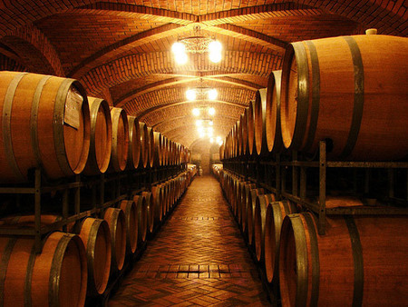

TU BARRICA
En el afán de compartir con ustedes, clientes y amigos, este increíble mundo del Vino,
Viñedos Azteca pone en sus manos la posibilidad de participar en la inigualable experiencia
de desarrollar un Vino propio.
Esta es nuestra forma de agradecer e impulsar a los conocedores del Vino, invitándolos a
integrarse en nuestro proceso de elaboración de vino artesanal y a seleccionar alguna de
nuestras barricas disponibles de proyecto “TU BARRICA”.
Imagina y diseña con nosotros el sueño de tener tu propio vino… y comparte con la gente
que más aprecias esta experiencia que solo algunos pueden vivir.